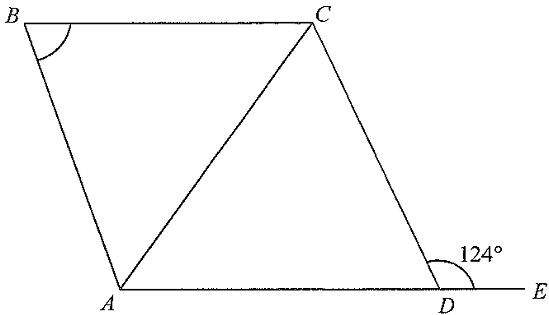

Question
In the figure, \(AB = BC\) and \(D\) is a point lying on \(AE\) such that \(AC = AD\). If \(AE /\!/ BC\), then \(\angle ABC =\)
A. \(44^\circ\)
B. \(56^\circ\)
C. \(62^\circ\)
D. \(68^\circ\)
The given figure shows \(\angle CDE = 124^\circ\).
Original Figure

Part (a) Find \(\angle ADC\)
\(\angle CDE\) = 124°
\(\angle ADC\) = 56°
0 / 1
1
Angles on a straight line
\(A, D, E\) are collinear, so \(\angle ADC\) and \(\angle CDE\) form a straight line.
\[ \angle ADC = 180^\circ - \angle CDE = 180^\circ - 124^\circ = 56^\circ \]Hint: Adjacent angles on a straight line add up to \(180^\circ\).
Answer: \(\angle ADC = 56^\circ\)
Part (b) Find \(\angle ACD\)
\(AC = AD\) (given)
\(\angle ACD = \angle ADC\) = 56°
0 / 1
1
Base angles of isosceles triangle
In \(\triangle ACD\), \(AC = AD\) (given), so the base angles are equal:
\[ \angle ACD = \angle ADC = 56^\circ \]Hint: Base angles of an isosceles triangle are equal.
Answer: \(\angle ACD = 56^\circ\)
Part (c) Find \(\angle ACB\)
\(\angle BCD\) = \(\angle CDE\) = 124°
\(\angle ACB\) = 68°
0 / 1
1
Alternate angles & angle difference
Since \(BC /\!/ AE\), alternate angles give \(\angle BCD = \angle CDE = 124^\circ\).
Also, \(\angle ACB = \angle BCD - \angle ACD = 124^\circ - 56^\circ = 68^\circ\).
Hint: Alternate angles are equal when lines are parallel; then subtract the interior angle.
Answer: \(\angle ACB = 68^\circ\)
Part (d) Find \(\angle ABC\)
\(\angle BAC\) = 68°
\(\angle BCA\) = 68°
\(\angle ABC\) = 44°
0 / 1
1
Angle sum of triangle
In \(\triangle ABC\), \(AB = BC\) (given), so \(\angle BAC = \angle ACB = 68^\circ\).
\[ \angle ABC = 180^\circ - 68^\circ - 68^\circ = 44^\circ \]Hint: The angle sum of a triangle is \(180^\circ\).
Answer: \(\angle ABC = 44^\circ\)
Summary of Answers
- (a) \(\angle ADC = 56^\circ\)
- (b) \(\angle ACD = 56^\circ\)
- (c) \(\angle ACB = 68^\circ\)
- (d) \(\angle ABC = 44^\circ\) → Option A